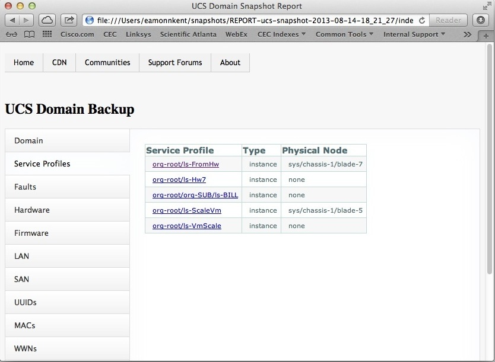

UCSM MIT Snapshot Report
One of the key components of Cisco UCS Manager is the MIT (Management Information Tree) or configuration management database.
The MIT contains comprehensive system information on the hardware components, configured polices and system state.
Cisco UCS Manager peforms configuration tasks based on the policies and configuration data stored in the MIT.
The UCS Manager GUI provides a user friendly view into the MIT for ease of monitoring and configuration.
Having access to the MIT data is critical for inventory, integration and disaster recovery purposes.
Wouldn't it be great if we could take a snapshot of the UCSM MIT and browse its contents off-line?
This would allow us to investigate the MIT without the risk of impacting the UCS domain. We could also
view the system state at a time in the past - even if UCS Manager is unreachable (for example during disaster recovery).
This document illustrates how we can use a few simple scripts create a UCSM MIT Snapshot and harvest its contents to
produce a UCSM MIT Snapshot Report.
There are two scripts to run:
- snapshot-mit.pl - queries the UCSM XML API for the entire MIT and stores it in an xml file (a UCSM MIT Snapshot).
- ucs-snapshot-report - produces an html report based on the UCSM MIT Snapshot.
The UCSM MIT Snapshot Report contains the following:
- Hardware inventory for each UCS component;
- The installed firmware version for each UCS component;
- A fault report with the complete list of UCS faults including their severity;
- Navigation links to view the xml content to configure many UCS policies;
- LAN and SAN configuration information;
- UCS identity report - MAC, WWN, WWPN, UUID, IQN;
For each service profile, it provides the following information:
- All policies referenced from the service profile;
- Hardware and firmware information if the service profile is associated with hardware;
- Network and Storage VLANs;
- Identities used by the service profile;
Below is a screen-shot of the top-level view of a UCSM Snapshot Report.

The best way to checkout an UCS MIT Snapshot Report is by generating your own.
You can download a virtual appliance
UCSM_Snapshot_Demo.ova with
the scripts installed. You can find instructions for configuring and running the application
in the README .
A UCSM MIT Snapshot Report is particularly useful for disaster recovery scenarios. Whether you are recovering from multiple failed
components or from the inadvertent deletion of a policy, it is useful to be able to view the previous system state. In a future post,
I will discuss how we can augment your UCS disaster recovery regiment with a UCSM MIT Snapshot.